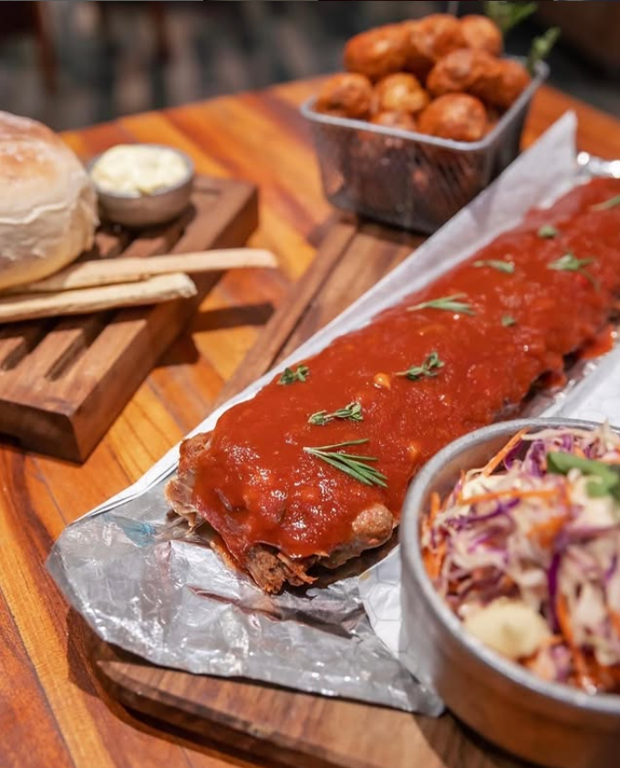

RIBS BBQ
Costillas de cerdo cocidas lentamente por más de 4 horas hasta lograr una textura que se deshace. Cubiertas con nuestra salsa BBQ de la casa y acompañadas por ensalada coleslaw, pan artesanal y papas crocantes.
Una entrada que combina lo clásico con un toque moderno, ideal para abrir el apetito compartiendo.
COMENTARIO DEL CHEF:
"Este plato es puro comfort food. Tradición sureña con un toque urbano."
